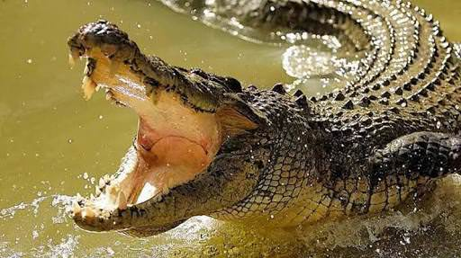
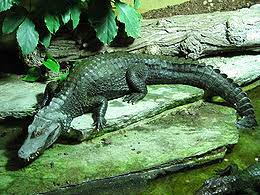
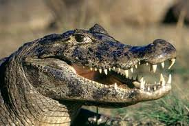

Türler
Timsah sürüngen bir hayvan türüdür ve karada ya da denizde yaşayabilir. Amfibilerden gelen, büyük sürüngen türlerinin biridir. Beden büyüklüğü ile karşılaştırıldığında uzun ve iri ama kısa bacakları olan biraz garip kombinasyonu vardır. Çok uzun bir kuyruğu ve keskin dişleri olduğu için dişlerinin arasına kolaylıkla avlarını alabilirler. Ayrıca kuyrukları uzun olduğu için kolaylıkla yüzebilir ve denizde hayatta kalabilirler. Vücudunun doğası ve bileşimi nedeniyle daha çok karada yaşarlar.
Amerikan Timsahı

Adını içinde bulunduğu kıtadan almıştır. Amerikan Baltmessah olarakta bilinen timsah özellikle Orta Amerika, Kuzey Amerika, Güney Kaliforniya, Meksika ve Güney Amerika‘da yaşamaktır. Amerikan timsahı tuzlu suyu ve büyük ölçüde vücudunda parazit bulunduğu için küçük balıkları sever. Ve boyu altı metreden fazladır.
Filipinler Timsahı
Timsahların en küçük türleri arasındadır. Uzunluğu üç metredir. En çok olduğu yer Filipinler Adalarıdır. Ancak nesilleri tükenmek üzeredir.
Cayman Siyah Timsahı

Amazon Nehri etrafında yaşamlarını sürdürürler. Genelde üç-dört metre arasında uzunlukları değişir. Erkeklerinde beş metre olanlarıda vardır.
Uzun Burun Timsahı:

Burnunun uzun olmasından dolayı adını bundan almıştır. En çok Afrika da yaşarlar. Üç-dört metre arasında uzunlukları vardır. Çiftleşme zamanlarında dişi timsah doğum yaptıktan sonra 120 gün sonra iyileşebilir. Bunun sebebide bir seferde en az 10 yumurta yumurtlar.
Timsah Aloorinoko:

Güney Amerika’da Aloorinoko Nehri kuzeyinde yaşadıkları için ismini buradan almıştır. 5 metre uzunluğuna sahiptir. Yumurtlama zamanlarında dişi timsah yumurtalarını kuru yapraklar altında saklar. Saklama süresi üç aydır.
Hindistan Gavyali:

Yaşamış oldukları bölgeler Hindistan ve Pakistan‘ı kapsayan bu timsah türü, ağız yapıları uzun olduğu için balık yakalamakta hiç zorlanmıyor. Büyük bir bölümü İndus Nehrinde yaşayan gavyanların boyları genelde 4 ile 5 metre arasında değişiyor.
Cüce Kayman:
İsminden de anlaşıldığı gibi dünyanın en küçük timsahı olarak biliniyor. Çoğunlukla yaşamını Güney Amerika‘nın kuzeyinde sürdürüyor. Yapısının küçük olmasından dolayı her türlü besin yiyemeyen bu timsah türü, kendini savunma konusunda da bir hayli zayıf.
Gözlüklü Kayman:
Anakondalardan korkan, onun dışında diğer hayvanların korkulu rüyası olan bu timsah keskin gözleri sayesinde avını kolayca yakalayabilir ve uzak mesafelere sıçrama konusunda da uzmandır. Yaşam alanları Orta ve Güney Amerika ırmaklarındadır. Boyu 6 m’yi bulur, burnu geniş ve kısadır.
Çin Timsahı:

Henüz kendisi ile ilgili detaylı bir bilgi bulunmayan ancak değişik kafa yapısıyla dikkat çeken bu timsah türü adından anlaşıldığı üzere yaşamını Çin’de sürdürüyor.
Ya Kare:

Yakare, Peru ve Paraguay çevresinde yaşayan en esnek timsah türü olarak bilinmektedir. 4-5 m civarında olan bu timsah nesli tükenmekte olan timsahlardan biri olduğu için çok nadir olarak görülür.